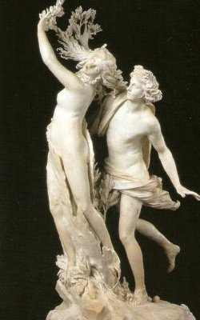
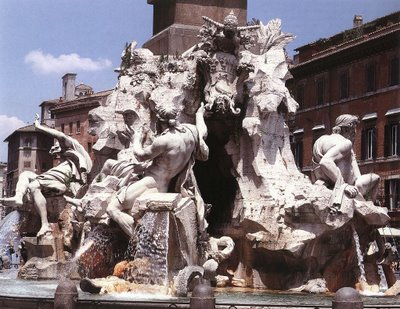

(Nápoles, 1598-Roma, 1680) Escultor, arquitecto y pintor italiano. Bernini es el gran genio del barroco italiano, el heredero de la fuerza escultórica de Miguel Ángel y principal modelo del Barroco arquitectónico en Europa. Aprendió los rudimentos de la escultura en el taller de su padre, Pietro (1562-1629), un escultor manierista de cierto relieve. Fue también su padre quien lo puso en contacto con algunos de los mecenas más importantes de su tiempo, lo que le permitió manifestar su talento de una forma bastante precoz. En sus obras más tempranas (Eneas, Anquises y Ascanio, El rapto de Proserpina) resultan ya evidentes la ruptura con el manierismo tardío y una concepción radicalmente distinta de la escultura; el intenso dramatismo, la grandiosidad y la búsqueda de efectos escenográficos están ya presentes en estas primeras creaciones.
En 1629, Bernini fue nombrado arquitecto de la basílica de San Pedro por el papa Urbano VIII. Desde entonces hasta su muerte trabajó ininterrumpidamente para los sumos pontífices, salvo un cierto paréntesis durante el pontificado de Inocencio X, quien prefirió a otros artistas y le encargó pocas obras. De sus realizaciones para San Pedro destacan el gran baldaquino sobre el altar mayor y el grupo escultórico de los Padres de la Iglesia que, observado a través de las columnas del baldaquino, ofrece efectos de una gran fuerza teatral, tal como pretendía el artífice.
Su mejor aportación a la basílica de San Pedro fue, sin embargo, la columnata que rodea la plaza, justo delante del templo, que le ha valido elogios continuos por su armonía y sus efectos escenográficos. Esta columnata representó una gran novedad, no sólo por sus dimensiones, sino sobre todo por su disposición elíptica, una forma muy cara a los arquitectos barrocos, inclinados a conferir a todas sus obras efectos de movimiento. Las monumentales estatuas que la rematan en su parte superior dotan al conjunto de un aire todavía más majestuoso y solemne si cabe.
Aunque en menor medida, Bernini trabajó también para mecenas privados, y fruto de esa colaboración es la obra quizá más representativa de su estilo escultórico, el Éxtasis de santa Teresa. Resulta difícil concebir una mayor intensidad dramática y una mayor fuerza dinámica en una realización de pequeñas dimensiones ejecutada mediante un tratamiento exquisito del mármol. Por su condición de elemento para la decoración de una capilla y sus magníficos efectos de claroscuro, se considera esta obra como un compendio magistral de las tres artes mayores, arquitectura, escultura y pintura, y por ello ha quedado como modelo incomparable de la escultura barroca.
Julio II le pidió también que decorase el techo de la Capilla Sixtina, encargo que Miguel Ángel se resistió a aceptar, puesto que se consideraba ante todo un escultor, pero que se convirtió finalmente en su creación más sublime. Alrededor de las escenas centrales, que representan episodios del Génesis, se despliega un conjunto de profetas, sibilas y jóvenes desnudos, en un todo unitario dominado por dos cualidades esenciales: belleza física y energía dinámica. De sus realizaciones como arquitecto, la más valorada, además de la columnata de San Pedro, es la pequeña iglesia de Sa Andrea al Quirinale, en la que arquitectura y escultura se unen en una búsqueda de efectismo destinada a crear un ambiente adecuado para suscitar la fe y los sentimientos religiosos.
Con sus hermosos edificios barrocos, Bernini coadyuvó como nadie en la renovación urbanística de Roma, a la cual aporto así mismo multitud de estatuas y algunas fuentes monumentales que todavía contribuyen en la actualidad a la belleza de la urbe. La que le encargó Inocencio X para decorar la piazza Navona, llamada Fuente de los cuatro ríos, es la más espectacular de estas realizaciones. Pintor por afición, sus obras se conservan hoy en los museos más reputados por su gran calidad, lo mismo que sus dibujos, que figuran en las mejores colecciones del mundo.
Volver